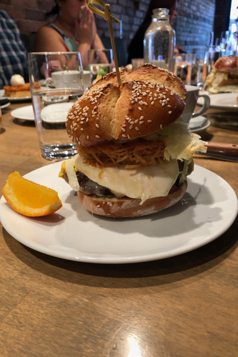

Top Five Brunch Spots in Vancouver
- Fable Diner
- Fable Diner is the second restaurant from celebrity cef Trevor Bird, serving elevated diner food including pork belly for bacon, hand made sausage, perfectly fried eggs, and the best milkshakes in town.
- Tuc Craft Kitchen
- Tuc Craft Kitchen has been open in Gastown for 5+ years and is now renowned for their fried chicken and waffles which -despite a recent menu change- still the best in town.
- Chambar
- Cafe Medina is a popular spot in the downtown core which typically has an hour long lineup at 10am on a weekday. What most people don't know is that Chambar is owned by the same people, has the same menu, a larger dining space, and takes reservations.
- Catch 122
- Catch 122 has recently had a new head chef take over which meant the loss of their premiere dish, The Dirty Breakfast, but the addition of the a friend chicken and waffles that is giving Tuc Craft Kitchen a run for their money.
- Argo Cafe
- For every high end restaurant in town there is also a greasy spoon diner, and Argo Cafe is one of the best of their kind. Offering cheap but delicious breakfast and nestled in the heart of the Olympic Village neighbourhood, Argo is a diamond in the rough.
